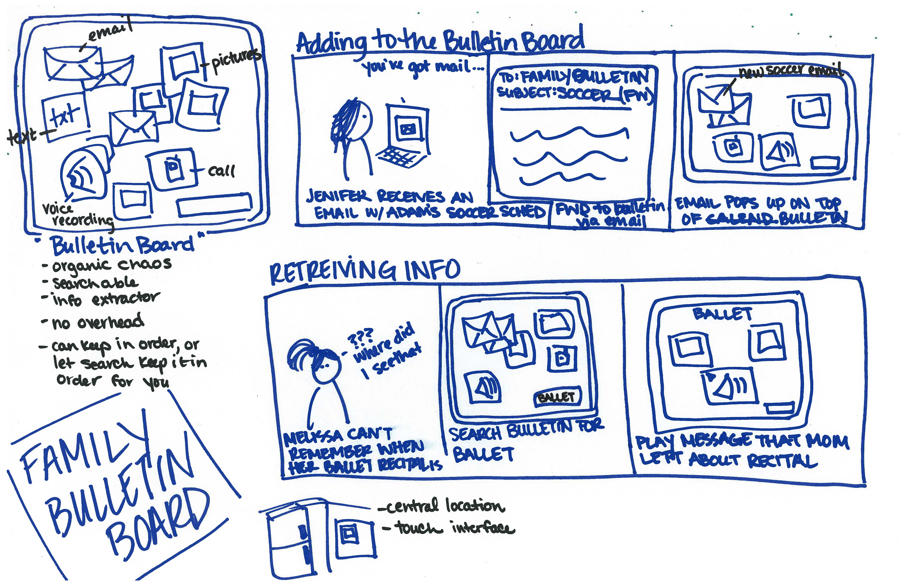
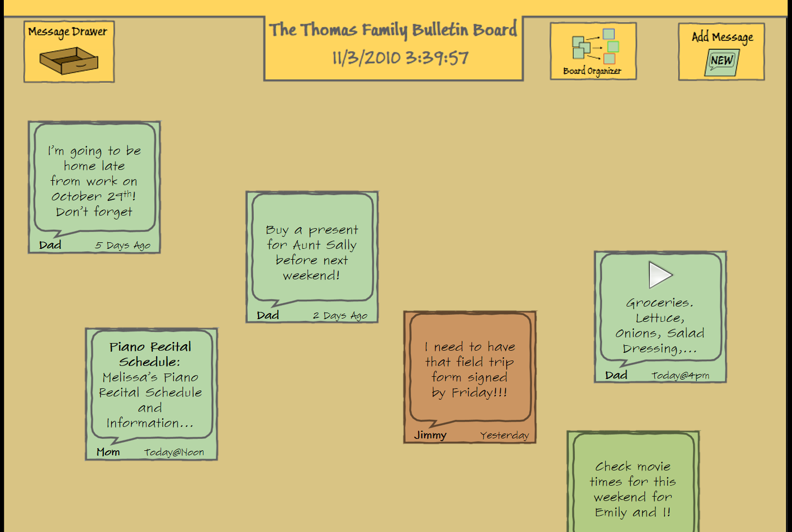
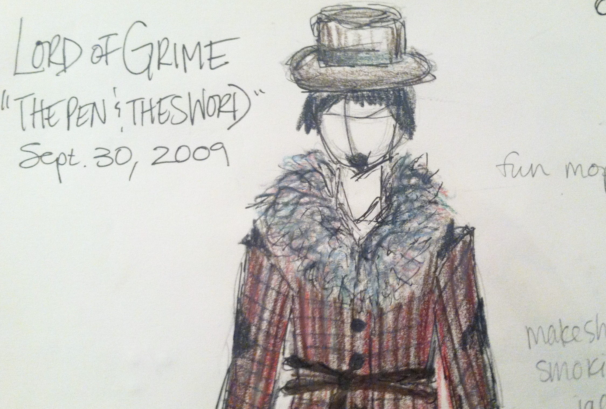
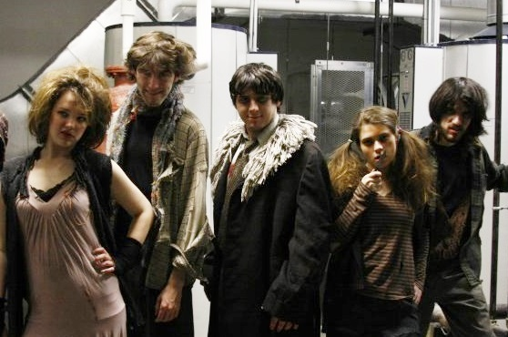

Kate Dramstad
Hi there, I'm Kate. I am a Program Manager at Microsoft working on OneDrive for Business. My interests outside of work include:
- New approaches to Engineering education that are more creative and inclusive (proud Olin College 2012 grad!)
- Performing musical theatre and plays, on stage or in my living room
- Baking snazzy-looking desserts
- Any service that makes being stylish easy and fun
- Hypothetical questions about the future of the world
- Having a ton of social media accounts
Projects
Family Organization and Interface Design
For a course in software interface design, our team interviewed busy parents and children about how they keep track of all their many activities. They showed us some of their current tools, what they loved about them, what they struggled with. We developed a concept for a large touch screen note board. With paper prototypes, we did a round of usability testing and used the feedback to iterate on our design. Because great software interfaces are in the details, we needed a high fidelity prototype to understand if our design was something that would work. Short on time and dev resources, our team put together an elaborate 250 slide PowerPoint deck with a complex network of links and animations. After putting together that deck, I decided I could fairly state I have Advanced PowerPoint skills.
 {kind=link}
{kind=link}
An explorations of Online Dating and psychology
I am fascinated by how people express their identities and connect with each other online. For a psychology class, I explored the existing research on how romantic relationships are traditionally formed as well as a few of the published papers on forming romantic relationships on the internet. Here's the paper I wrote speculating on how online dating may facilitate relationship formation. You can also check out my presentation.
Solving the "30 Second Squirrel" Syndrome: user-centered design for urban high school teachers
My team and I conducted a series of user interviews with urban high school teachers in the Boston area. Using ethnographic techniques, we endeavored to understand their hopes and dreams, as well as their unique pain points. We synthesized this information and use it to generate "blue sky" product ideas that could improve classroom management. We used approximately one metric ton of Post-its.
Costuming the world premier of The Pen and The Sword
In college, I costumed the world premier of a full length, student-written play, The Pen and The Sword. I worked with the writer/director to capture the visual contrast between a cold but well-meaning vigilante and a ruffian gang of street thugs. I began collaborating with the Creative team with a series of sketches, which were then built from modifying found pieces or altering patterns to achieve the desired look. Check out an early sketch of The Lord of Grime, as well as production photo of the whole gang.
 {kind=link}
{kind=link}
Resumé
If you would like the details of my formal work experience, take a look at my resumé.
For more of my professional work, you can also check out my talk on the SharePoint mobile story at SPC 2014, and my blog post about SharePoint Search Display Templates.
Contact
I'm pretty friendly. Let's get in touch!
Hit me up on Twitter or LinkedIn. If you'd rather send an email, that works too: kate.dramstad@gmail.com